Проектирую цифровые решения
Решаю задачи с помощью цифровых технологий — там, где привычный путь слишком долгий, дорогой или невозможен
Сначала обсуждаем задачу и план — оплата только после
Работы · изображения
Под каждой работой — с какой задачи она началась
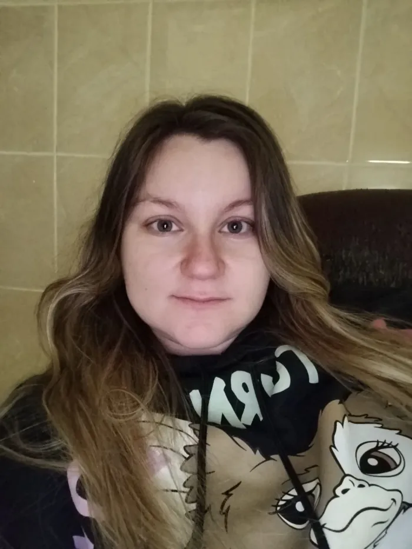
до послев любом образе — деловой портрет, художественный кадр, фэнтези
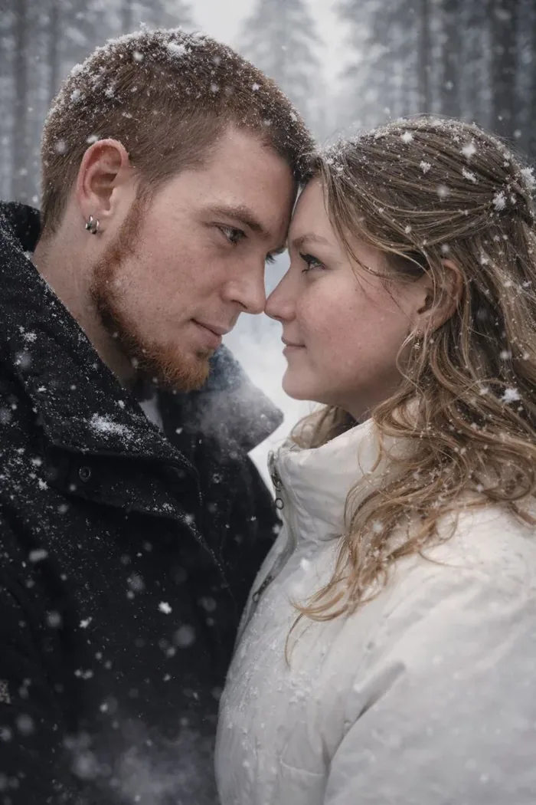
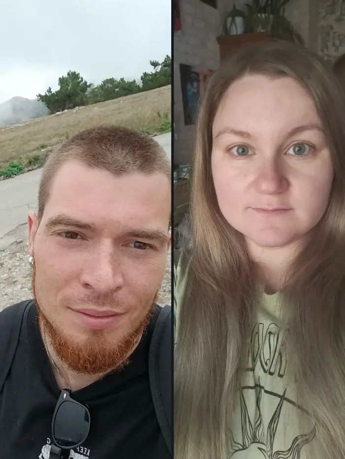
до последаже если совместных снимков нет
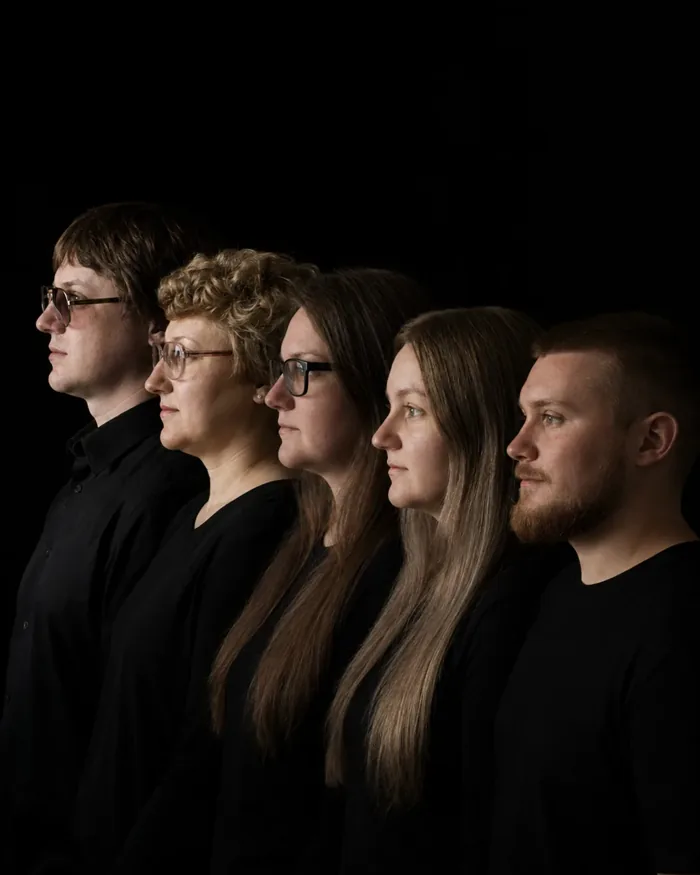
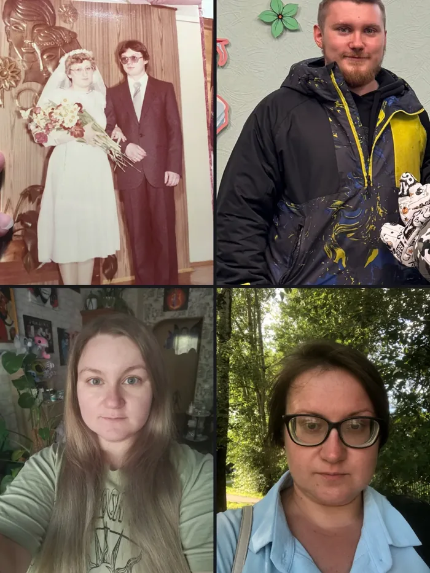
до последаже если собраться невозможно; старые снимки — снова живые
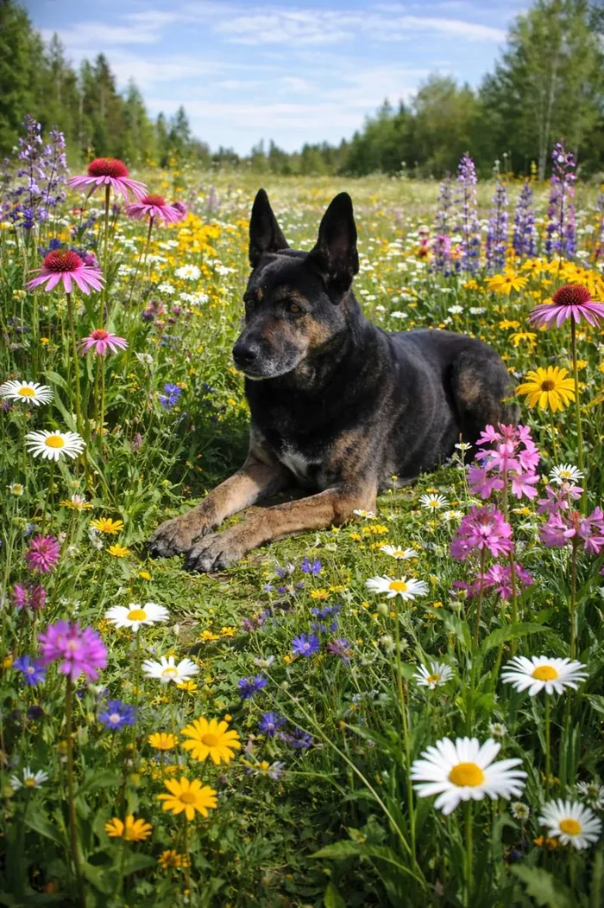
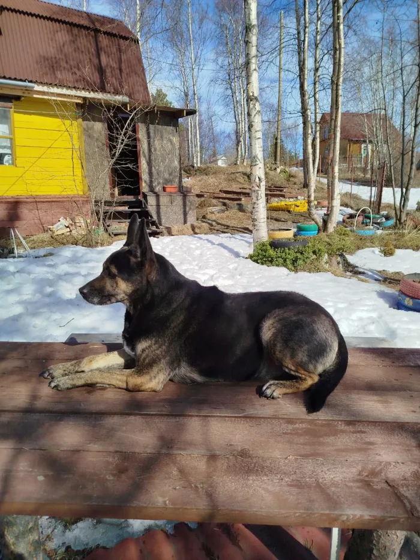
до послелуг, сани, северное сияние
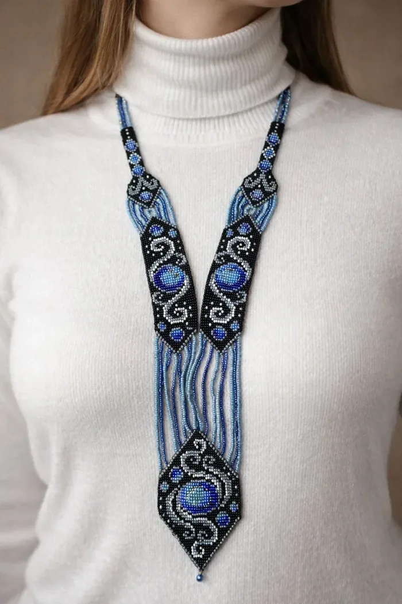
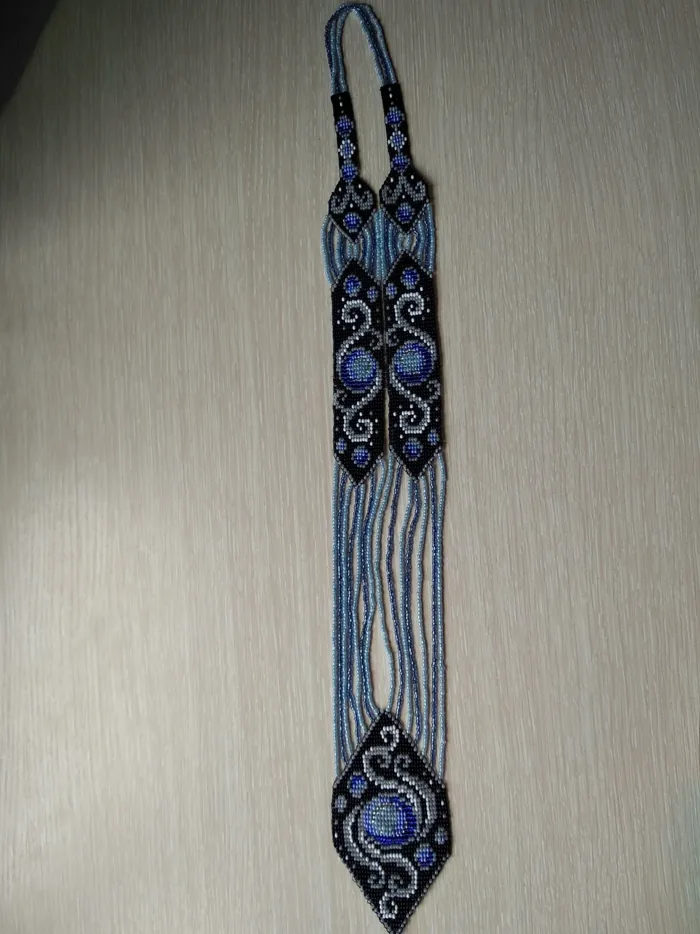
до послев кадр для продажи — бусы, серьги, вязаная игрушка
египетские боги по описанию, свой стикерпак, иллюстрации к сказке
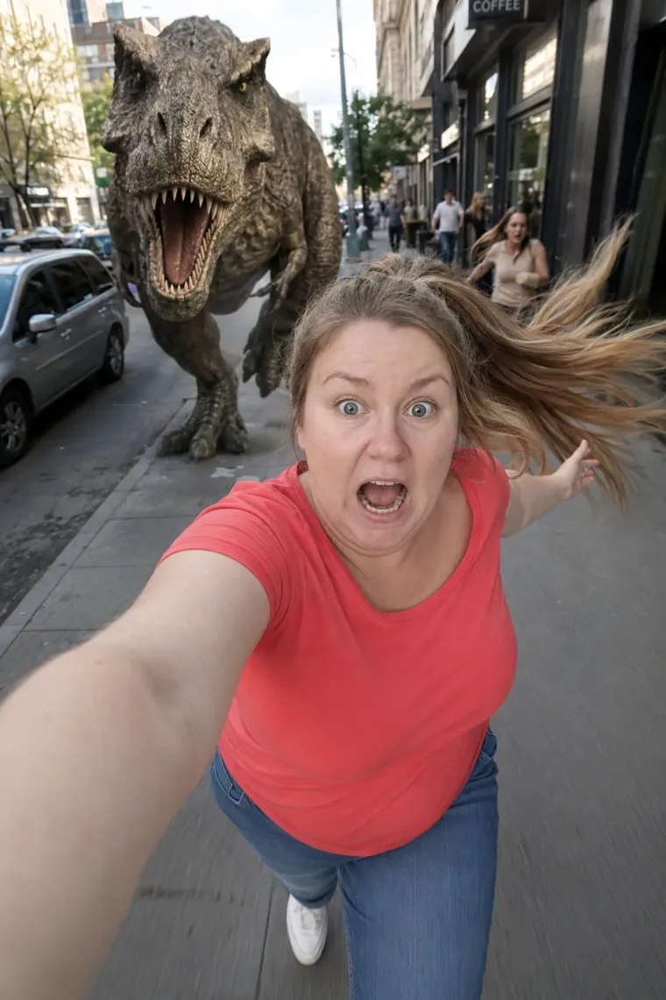
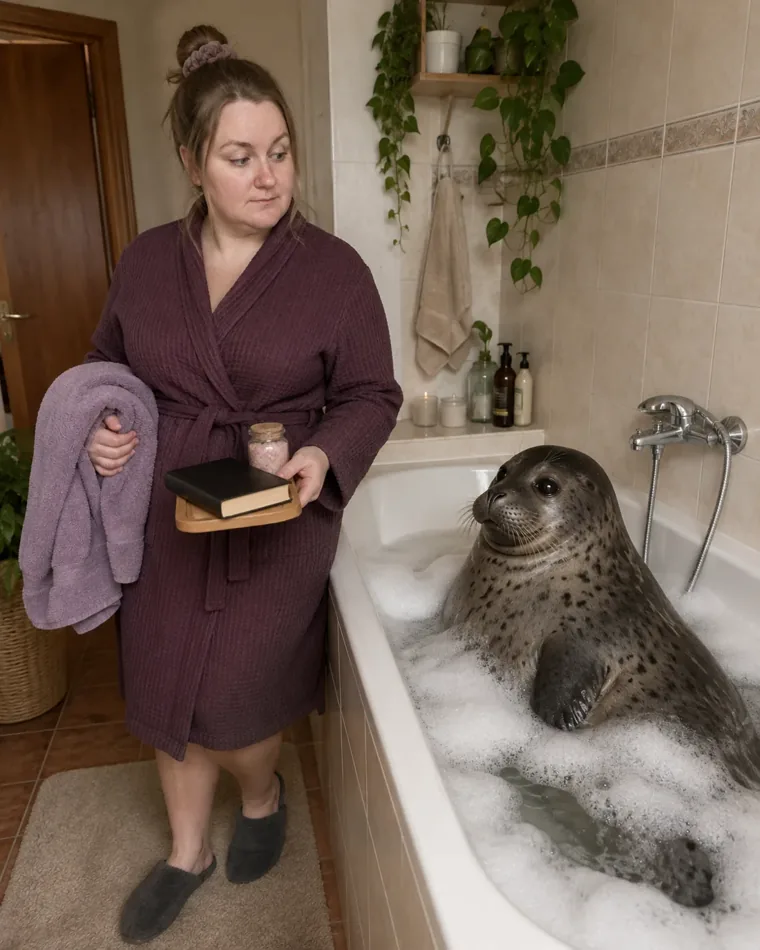
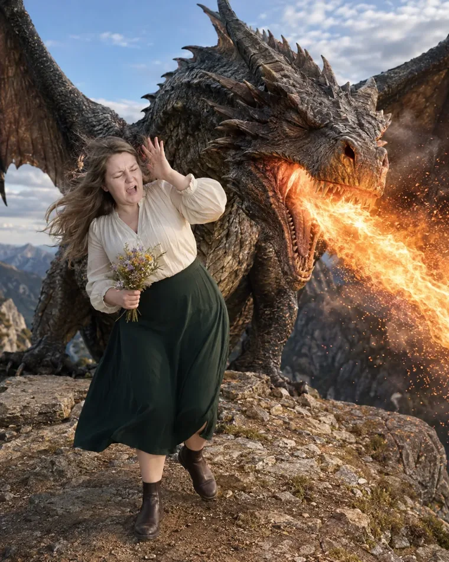
вы — в любой истории: от тираннозавра на улице до тюленя в собственной ванне
Все лица на витрине — с разрешения их владельцев
Работы · цифровые решения
Вы объясняете работу — я собираю систему, которая её делает
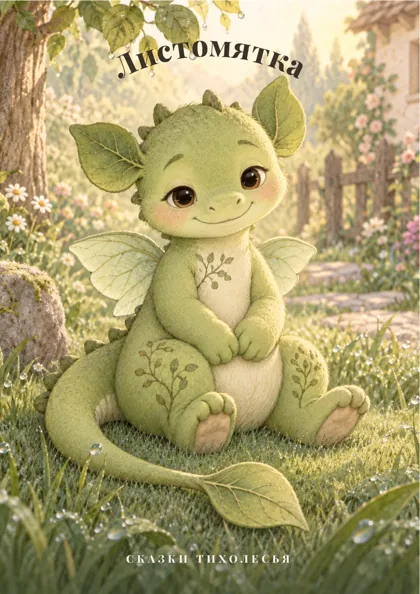
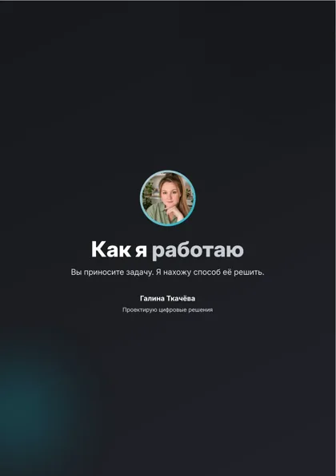
памятка, гайд, сказка с иллюстрациями
памятка на 8 страниц, сказка на 14
помощник узнаёт, что на снимке, и раскладывает по папкам
1 048 фото по папкам
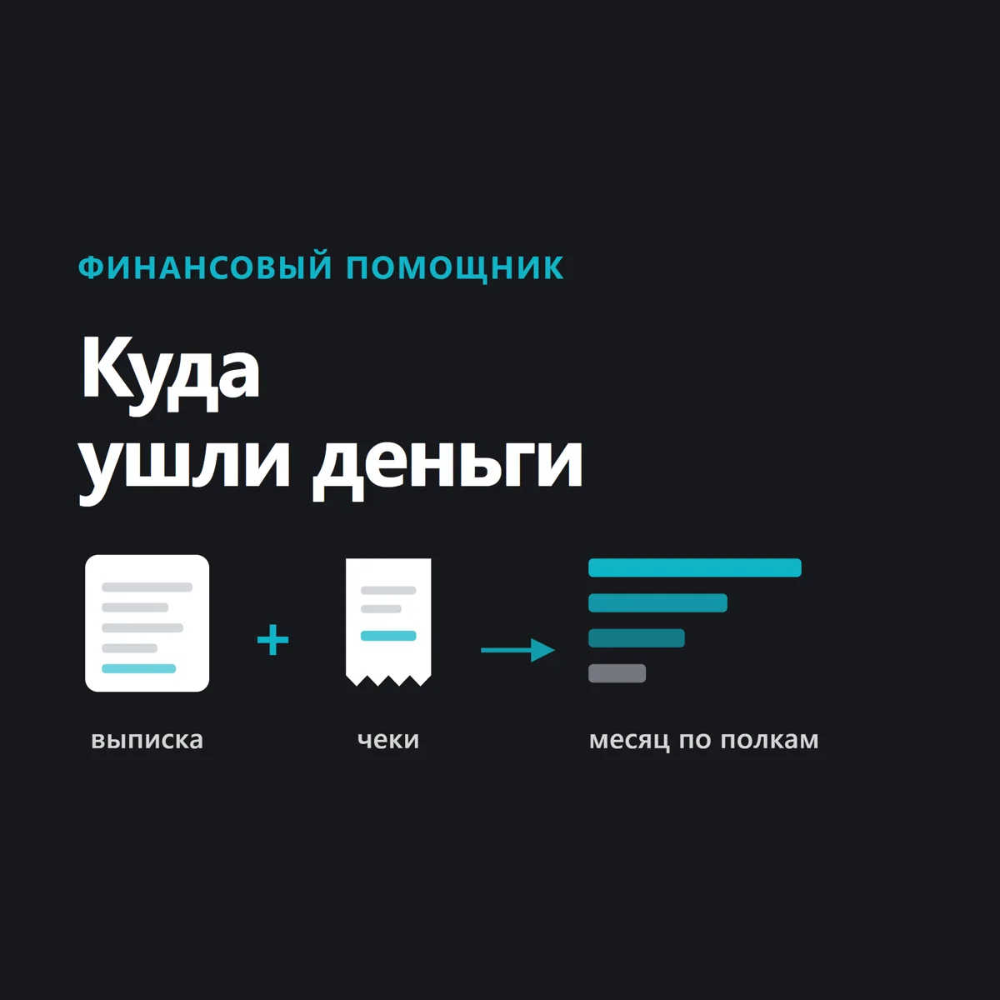
помощник раскладывает траты по категориям и сверяет суммы с банком
8 месяцев разобраны
из обычного текста — помощник с кнопками
из кучи наработок — чёткая структура: помощник следит за логикой и героями, помогает придумывать и править, а знаток платформ — за выкладкой и статистикой
помощник сам берёт цифры из ваших профилей и делает отчёт, охотник находит подходящие заказы, а можно следить и за конкурентами
Данные остаются на вашем компьютере
Услуги и цены
Цена зависит от задачи — здесь нижняя граница, точную назову после разговора
Изображения
человек или питомец, любой образ
пять кадров, одному или вдвоём
даже без общего снимка
царапины, заломы, цвет
то, чего не сфотографировать
Цифровые решения
памятка, гайд, сказка с иллюстрациями
фотоархив, выписки, аналитика, помощник под дело
визитка или лендинг, тексты входят
Как я работаю
Изучать технологии не нужно — нужно рассказать, что вы хотите получить
своими словами, как рассказали бы знакомому
что хотите получить, почему именно так, что уже есть, какие ограничения
что получите, в какой срок, сколько стоит и какой следующий шаг
и только после этого оплата
правки входят в стоимость
когда не стыдно поставить под работой своё имя
Вопросы и ответы
Контакты
Это моё сообщество во ВКонтакте — отвечаю там сама
Расскажите задачу своими словами, отвечаю в течение дня
Обсудить задачуцифровые решения